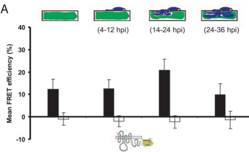

MLO (Mildew resistance locus o) of barley encodes a 533-residue, plant-specific integral membrane protein that is the founder of the MLO family. It spans the plasma membrane seven times, with an extracellular N-terminus and a cytoplasmic C-terminal tail that carries a calmodulin-binding domain; calmodulin binds this domain in a Ca2+-dependent manner, and MLO-calmodulin association increases at fungal entry sites. Conserved extracellular cysteines, the second and third cytoplasmic loops and the C-terminal tail are required for activity, and MLO self-associates in planta. Wild-type MLO acts as a host susceptibility factor for the barley powdery mildew fungus Blumeria graminis f. sp. hordei: upon attack it is redistributed into a plasma membrane microdomain beneath fungal appressoria, where it dampens the cell-wall-restricted hydrogen peroxide burst and other defense responses that otherwise block fungal penetration of the leaf epidermis. Recessive loss-of-function mlo alleles therefore confer durable, broad-spectrum penetration resistance to powdery mildew (dependent on ROR1 and the syntaxin ROR2), accompanied by spontaneous mesophyll cell death and accelerated leaf senescence, and by enhanced susceptibility to some hemibiotrophic and necrotrophic fungi. MLO transcript levels rise in response to fungal attack, wounding, oxidative stress and senescence. The biochemical activity of barley MLO is not established; Arabidopsis MLO paralogs have been shown to act as Ca2+-permeable channels, making a channel function a leading hypothesis.
| GO Term | Evidence | Action | Reason |
|---|---|---|---|
|
GO:0006952
defense response
|
IEA
GO_REF:0000002 |
MODIFY |
Summary: InterPro2GO mapping from the Mlo domain (IPR004326). For barley MLO the sign of this annotation is inverted: wild-type MLO suppresses defense and promotes fungal entry, and resistance arises only when MLO is lost [PMID:9054509, PMID:12114562, PMID:11919636]. The Mlo domain mapping is also broad for the family as a whole, many of whose members act in pollen tube reception or root growth rather than defense [PMID:36588121].
Reason: An unqualified "defense response" implies that MLO executes defense, which is the opposite of what the barley genetics shows. Wild-type MLO dampens the penetration-site H2O2 burst and suppresses mesophyll oxidative burst and cell death, and the calmodulin-binding mutant halves MLO's ability to negatively regulate defense. "Negative regulation of defense response" (GO:0031348) captures the supported direction of effect and matches the term used for the Arabidopsis ortholog MLO2. A more specific "to fungus" child does not exist. The mechanism by which MLO suppresses defense is unknown, and the evidence is genetic (loss of function), so this is a regulatory, not an executive, process term; the more specific "defense response to fungus" is deliberately not proposed.
Proposed replacements:
negative regulation of defense response
Supporting Evidence:
PMID:12114562
Wild-type MLO dampens the cell wall-restricted hydrogen peroxide burst at points of attempted fungal penetration of the epidermal cell wall, and in subtending mesophyll cells, it suppresses a second oxidative burst and cell death.
PMID:11919636
Loss of calmodulin binding halves the ability of MLO to negatively regulate defence against powdery mildew in vivo.
PMID:9054509
The findings are compatible with a dual negative control function of the Mlo protein in leaf cell death and in the onset of pathogen defense; absence of Mlo primes the responsiveness for the onset of multiple defense functions.
file:HORVU/MLO/MLO-deep-research-falcon.md
the historical phrase “Mlo resistance” denotes resistance obtained by *losing* MLO activity, not an antimicrobial activity of the wild-type protein
|
|
GO:0016020
membrane
|
IEA
GO_REF:0000120 |
MODIFY |
Summary: Correct but uninformative. Barley MLO is a seven-transmembrane integral membrane protein that was localized by leaf fractionation and immunoblotting to the plasma membrane [PMID:10574976], and live imaging shows it redistributing within the plasma membrane to fungal entry sites [PMID:15703292].
Reason: Direct experimental evidence places MLO in the plasma membrane, so the specific term should replace the generic one.
Proposed replacements:
plasma membrane
Supporting Evidence:
PMID:10574976
Fractionation of leaf cells and immunoblotting localized the protein to the plant plasma membrane.
PMID:15703292
fluorescently tagged MLO protein becomes redistributed in the plasma membrane (PM) and accumulates beneath fungal appressoria coincident with the initiation of pathogen entry into host cells
|
|
GO:0005516
calmodulin binding
|
IDA
PMID:11919636 Calmodulin interacts with MLO protein to regulate defence ag... |
NEW |
Summary: MLO carries a C-terminal cytoplasmic domain that binds calmodulin in a Ca2+-dependent manner in vitro [PMID:11919636], and MLO-calmodulin FRET increases at fungal penetration sites in living barley cells [PMID:15703292]. Calmodulin binding is required for full MLO activity.
Reason: This is a molecular function of MLO itself, demonstrated directly and functionally validated by mutagenesis of the binding domain (UniProt records L420 and W423 mutants). It is the only experimentally established molecular activity of barley MLO and is absent from GOA.
Supporting Evidence:
PMID:11919636
We have identified a domain in MLO that mediates a Ca2+-dependent interaction with calmodulin in vitro.
PMID:15703292
We previously identified calmodulin, a cytoplasmic calcium sensor, as an interactor and positive regulator of MLO activity and demonstrate here by FRET microscopy an increase in MLO/calmodulin FRET around penetration sites coincident with successful host cell entry.
|
Q: Does barley MLO itself conduct Ca2+ (or other divalent cations) when expressed heterologously, as shown for Arabidopsis MLO1/5/9/15, and is channel activity required for powdery mildew susceptibility? If so, should calcium channel activity (GO:0005262) be added as the core molecular function?
Q: Is "negative regulation of defense response" the right process for a susceptibility factor whose mechanism is unknown, or would a qualifier such as acts_upstream_of_or_within (as TAIR uses for Arabidopsis MLO2) better reflect the loss-of-function basis of the evidence?
Experiment: Two-electrode voltage clamp or patch clamp of barley MLO in Xenopus oocytes or HEK cells, comparing wild-type MLO with resistance-conferring mlo point mutants and the calmodulin-binding mutant W423R, to test whether susceptibility function correlates with ion conductance.
Experiment: Genetically encoded Ca2+ reporter imaging at Blumeria penetration sites in Mlo versus mlo epidermal cells to determine whether MLO contributes to local Ca2+ influx during fungal entry.
The research report should be a detailed narrative explaining the function, biological processes, and localization of the gene product. Citations should be given for all claims.
You should prioritize authoritative reviews and primary scientific literature when conducting research. You can supplement
this with annotations you find in gene/protein databases, but these can be outdated or inaccurate.
We are specifically interested in the primary function of the gene - for enzymes, what reaction is catalyzed, and what is the substrate specificity? For transporters, what is the substrate? For structural proteins or adapters, what is the broader structural role? For signaling molecules, what is the role in the pathway.
We are interested in where in or outside the cell the gene product carries out its function.
We are also interested in the signaling or biochemical pathways in which the gene functions. We are less interested in broad pleiotropic effects, except where these elucidate the precise role.
Include evidence where possible. We are interested in both experimental evidence as well as inference from structure, evolution, or bioinformatic analysis. Precise studies should be prioritized over high-throughput, where available.
Identity verified. The target is the canonical Hordeum vulgare (barley) MLO protein, not the similarly named barley MLA resistance receptor or another MLO paralog. A study explicitly identifies HvMlo as UniProt P93766; an earlier MLO-family inventory lists barley Mlo separately from Mlo2. The supplied Mlo-domain annotations, IPR004326 and PF03094, agree with the protein’s experimentally studied seven-transmembrane MLO-family architecture. (huebbers2026alphafold3captures pages 5-8, devoto2003molecularphylogenyand pages 2-3, elliott2005conservedextracellularcysteine pages 1-2)
The most firmly established biological function of wild-type barley MLO is to enable powdery-mildew infection of leaf epidermal cells. It is a host susceptibility factor: functional MLO favors entry by Blumeria graminis f. sp. hordei (also called B. hordei), whereas recessive, impaired mlo alleles confer resistance. Thus, the historical phrase “Mlo resistance” denotes resistance obtained by losing MLO activity, not an antimicrobial activity of the wild-type protein. The complete biochemical chain from MLO activation to successful fungal entry remains unresolved. (bhat2005recruitmentandinteraction pages 1-2, reinstadler2010novelinducedmlo pages 1-2, elliott2005conservedextracellularcysteine pages 1-2)
| Annotation | Direct barley evidence | Inference / limitation |
|---|---|---|
| Identity, topology, localization | HvMLO is the 533-aa Hordeum vulgare MLO-family protein corresponding to UniProt P93766, distinct from barley Mlo2. It is an integral plasma-membrane protein with seven membrane-spanning helices, an extracellular N-terminus, and a cytoplasmic C-terminus. (huebbers2026alphafold3captures pages 5-8, devoto2003molecularphylogenyand pages 2-3, elliott2005conservedextracellularcysteine pages 1-2) | Identity, organism, topology, and MLO-family assignment are strongly supported. It is not the similarly named MLA immune receptor. |
| Powdery-mildew susceptibility factor | Functional wild-type MLO promotes susceptibility to Blumeria graminis f. sp. hordei; recessive loss-of-function mlo alleles confer resistance. Fungal penetration was about 56% in wild type, 0.8% in complete-resistance mutants, and 18–35% in partial-resistance mlo-12/mlo-28 mutants. (piffanelli2002thebarleymlo pages 2-4) | MLO is not a resistance protein in the usual sense: resistance results from loss or impairment of MLO. Its contribution to fungal entry is more certain than its complete biochemical mechanism. |
| Pathogen-induced membrane microdomain and CaM binding | MLO-YFP accumulates focally in the plasma membrane beneath fungal appressoria. In living barley epidermal cells, MLO–calmodulin FRET was 12.2 ± 4.6%; the CaM-binding-site mutant W423R reduced it to 2.7 ± 2.3%. The interaction increases during fungal entry. (bhat2005recruitmentandinteraction pages 3-4, bhat2005recruitmentandinteraction media 182a132e) | Demonstrates physical proximity/binding and the importance of the cytoplasmic CaM-binding domain. It does not establish whether CaM opens, closes, stabilizes, or negatively regulates an MLO channel. |
| Emerging ion-channel function | Published work summarized in 2026 reports that HvMLO conducts currents carried by Ba²⁺ and Mg²⁺, but not K⁺ or Na⁺. For P93766, a trimeric central pore, Ca²⁺ coordination, permeability, and tension-dependent opening are supported by AlphaFold/MD modeling and experimental self-association rather than direct Ca²⁺ patch-clamp data. (huebbers2026alphafold3captures pages 5-8, huebbers2026alphafold3captures pages 1-5, huebbers2026alphafold3captures pages 33-36) | Best current annotation: candidate divalent-cation/Ca²⁺-permeable channel, potentially mechanosensitive. Direct, sequence-specific demonstration of Ca²⁺ conductance and selectivity for barley P93766 remains incomplete. |
| Polarized secretion / EXO70 pathway | No direct barley-P93766 evidence presently establishes an HvMLO–EXO70 complex. A 2024 Arabidopsis study showed MLO–EXO70 colocalization, FRET/protein interaction, altered callose-synthase delivery, and reduced fungal penetration in combined mutants. (huebbers2024interplayofexo70 pages 1-2, huebbers2024interplayofexo70 pages 16-17) | Supports a conserved hypothesis that MLO proteins organize localized exocytosis or cell-wall remodeling, but the specific EXO70 mechanism must not be assigned directly to barley P93766 without barley validation. |
| Agricultural implementation | Breeders deploy recessive mlo resistance alleles, not wild-type MLO activity. Among Czech spring-barley varieties newly registered in 2021–2023, 22 of 23 (95.7%) carried Mlo/mlo-based resistance; early necrotic spotting and yield penalties were substantially reduced through breeding. (dreiseitl2024mlomediatedbroadspectrumand pages 1-2, dreiseitl2024mlomediatedbroadspectrumand pages 4-5) | Demonstrates extensive real-world use and durability in European spring barley. Deployment in winter barley remains controversial because broader year-round selection could encourage pathogen adaptation. |
Table: Evidence-level annotation of barley HvMLO (UniProt P93766), distinguishing direct barley findings from cross-species or computational inference. The table also separates susceptibility conferred by wild-type MLO from resistance produced by recessive mlo alleles.
MLO is an integral plasma-membrane protein, with seven membrane-spanning segments, an extracellular amino terminus, and a cytoplasmic carboxyl terminus. Its most relevant demonstrated site of action is the barley leaf epidermal plasma membrane beneath an attempted fungal penetration site. Fluorescent MLO accumulates there beneath the fungal appressorium; this is redistribution within the host-cell membrane, not evidence that MLO is secreted into the fungus or cell wall. The microscopy panels directly show focal MLO accumulation at these sites. Pathogen challenge also increased MLO protein abundance approximately fivefold in enriched plasma-membrane fractions, peaking around 16 hours after inoculation in the study conditions. (bhat2005recruitmentandinteraction pages 1-2, bhat2005recruitmentandinteraction media 182a132e, piffanelli2002thebarleymlo pages 4-6)
A well-supported molecular connection is Ca²⁺-dependent calmodulin regulation. Barley MLO’s cytoplasmic tail contains a calmodulin-binding region. In living barley epidermal cells, MLO–calmodulin fluorescence-resonance energy transfer (FRET) averaged 12.2 ± 4.6%; the MLO W423R binding-region variant gave 2.7 ± 2.3%, near background. FRET between MLO and calmodulin increases during fungal entry, and mutations affecting the binding region impair full susceptibility-promoting function. These experiments support a physical, functionally important interaction, but do not by themselves establish exactly how calmodulin changes MLO’s activity. (kusch2017mlobasedresistancean pages 2-4, bhat2005recruitmentandinteraction pages 3-4)
Mutant and complementation studies locate important functional determinants in the second and third cytoplasmic loops, the cytoplasmic tail, and conserved extracellular cysteines. Expressing functional MLO in resistant barley epidermal cells restores susceptibility in single-cell assays. In one allele comparison, fungal penetration was approximately 56% in wild-type plants, 0.8% in strongly resistant mutants, and 18–35% in the partially resistant mlo-12 and mlo-28 mutants. Some disruptive mutations also alter membrane-protein quality control; consequently, a loss-of-function phenotype does not always identify a signaling residue rather than impaired folding or accumulation. (reinstadler2010novelinducedmlo pages 1-2, piffanelli2002thebarleymlo pages 2-4, elliott2005conservedextracellularcysteine pages 1-2)
The best-supported pathway description is that fungal contact → local MLO accumulation and calmodulin-associated activity at the epidermal membrane → increased likelihood of fungal penetration. In resistant mlo plants, attempted entry is instead commonly stopped at the cell periphery, where callose-containing wall appositions, or papillae, and an epidermal oxidative burst are enhanced. Barley ROR2, a plasma-membrane syntaxin implicated in defense-related secretion, and ROR1 are required for full mlo resistance: ror mutations partially restore fungal entry. This is a genetic pathway relationship, not proof that MLO binds ROR1 or ROR2 directly. MLO and ROR2 can both accumulate near attempted entry sites, including under conditions that disrupt actin-dependent transport. (bhat2005recruitmentandinteraction pages 1-2, kusch2017mlobasedresistancean pages 2-4, bhat2005recruitmentandinteraction pages 3-4)
MLO also suppresses some infection-associated oxidative and cell-death responses. Following attempted penetration, resistant mlo plants exhibit an early cell-wall-associated H₂O₂ burst and, later, oxidative staining and cell death in underlying mesophyll; these later responses diminish in an mlo-5 ror1-2 double mutant. Spontaneous premature leaf senescence in uninoculated mlo plants further indicates a role in limiting cell death. The later mesophyll response should not be mistaken for the immediate epidermal mechanism that blocks fungal entry: the original study distinguishes their timing and location. (piffanelli2002thebarleymlo pages 2-4, piffanelli2002thebarleymlo pages 4-6)
Ion permeation is a promising, but incompletely resolved, molecular annotation for P93766. A 2026 barley-MLO study reports that earlier experiments observed HvMLO currents carried by Ba²⁺ and Mg²⁺, but not K⁺ or Na⁺. The original ion-current experiment was not independently examined for this report, so its exact assay conditions and quantitative selectivity should not be inferred here. In a peer-reviewed 2023 study, Arabidopsis MLO1/5/9/15 supported regulated inward, Ca²⁺-associated currents in reconstituted RALF-signaling experiments. Those experiments concern different proteins, not direct electrophysiological proof of Ca²⁺ conduction by barley P93766. (gao2023ralfsignalingpathway pages 6-7, gao2023ralfsignalingpathway pages 3-4, huebbers2026alphafold3captures pages 33-36)
A 2026 bioRxiv preprint, which has not been peer reviewed, explicitly modeled P93766 and found experimentally supported MLO self-association together with predicted dimeric/trimeric assemblies. Its trimer models contain a candidate central pore; molecular-dynamics simulations predict Ca²⁺ permeation through proposed open conformations and opening under modeled membrane tension. These findings provide a testable channel/mechanosensing mechanism, not definitive proof that native barley MLO conducts Ca²⁺ during fungal entry or that mechanical gating causes susceptibility. No enzyme reaction or established organic-molecule transport substrate should be assigned to this protein. (huebbers2026alphafold3captures pages 5-8, huebbers2026alphafold3captures pages 1-5)
A peer-reviewed 2024 study linked MLO proteins to EXO70-dependent polarized secretion, including callose-synthase delivery, cell-wall composition, and powdery-mildew susceptibility. Importantly, its interaction and trafficking experiments were conducted principally with Arabidopsis MLO isoforms, not barley P93766. They strengthen an exocytosis-related hypothesis for the MLO family but do not establish a barley MLO–EXO70 complex or identify its cargo. This distinction matters because a secretory role, an ion-channel role, and their possible coupling are not yet experimentally unified for the barley protein. (huebbers2024interplayofexo70 pages 1-2, huebbers2024interplayofexo70 pages 16-17)
The real-world application is breeding barley with recessive mlo resistance alleles, rather than enhancing wild-type MLO. In his January 2024 specialist assessment, Dreiseitl reports that 22 of 23 (95.7%) Czech spring-barley varieties newly registered in 2021–2023 carried Mlo/mlo-based resistance; over 1993–2023, the figure was 114 of 164 newly registered varieties. These are registration statistics, not percentages of planted hectares. The same assessment describes broad effectiveness and long agricultural durability, while noting that deployment is much less established outside European spring barley. (dreiseitl2024mlomediatedbroadspectrumand pages 1-2, dreiseitl2024mlomediatedbroadspectrumand pages 4-5)
Durability does not mean biological impossibility of pathogen adaptation. Early resistant cultivars could show necrotic leaf spotting and reduced yield, although subsequent breeding reduced these penalties. The 2024 assessment notes limited experimental adaptation and cautions that expanding deployment into winter barley could increase selection pressure through more continuous host availability; a separate 2024 barley genetics study raises the same concern. These are reasons to monitor resistance and agronomic performance, not evidence that currently deployed spring-barley resistance has generally failed. (dreiseitl2024mlomediatedbroadspectrumand pages 5-6, dreiseitl2024mlomediatedbroadspectrumand pages 1-2, guo2024genomewideassociationmapping pages 1-2)
A November 2024 primary study comparing susceptible wild-type barley with a resistant, near-isogenic mlo5 line detected genotype-dependent infection-associated volatile profiles and sender-genotype-dependent effects on resistance in recipient plants. Its salicylate-related observations concern downstream plant responses and do not show that MLO directly synthesizes or transports volatile compounds. (laupheimer2024blumeriahordeiaffects pages 1-2, laupheimer2024blumeriahordeiaffects pages 3-5)
Bottom line: Annotate barley P93766 with high confidence as a seven-pass, epidermal plasma-membrane powdery-mildew susceptibility factor that associates with calmodulin and acts at pathogen-entry microdomains. Annotate participation in local defense suppression and Ca²⁺-linked signaling with appropriate qualification. A divalent-cation/Ca²⁺ channel and coupling to polarized exocytosis are important current mechanistic hypotheses, but barley-specific ion selectivity, gating, downstream partners, and causal links to fungal penetration require further direct testing. (bhat2005recruitmentandinteraction pages 1-2, bhat2005recruitmentandinteraction pages 3-4, piffanelli2002thebarleymlo pages 2-4, gao2023ralfsignalingpathway pages 3-4, huebbers2026alphafold3captures pages 33-36, huebbers2024interplayofexo70 pages 1-2)
References
(huebbers2026alphafold3captures pages 5-8): Jan W. Huebbers, Chandan K. Das, Alexander Speck, Myriam E. Fürst, Hanna Simon, Marie Laufens, Sophie C. J. Levecque, Matthias Freh, Maria Fyta, and Ralph Panstruga. Alphafold 3 captures oligomeric states and interaction dynamics of mlo ion channels. bioRxiv, Apr 2026. URL: https://doi.org/10.64898/2026.04.10.716904, doi:10.64898/2026.04.10.716904. This article has 2 citations.
(devoto2003molecularphylogenyand pages 2-3): Alessandra Devoto, H. Andreas Hartmann, Pietro Piffanelli, Candace Elliott, Carl Simmons, Graziana Taramino, Chern-Sing Goh, Fred E. Cohen, Brent C. Emerson, Paul Schulze-Lefert, and Ralph Panstruga. Molecular phylogeny and evolution of the plant-specific seven-transmembrane mlo family. Journal of Molecular Evolution, 56:77-88, Jan 2003. URL: https://doi.org/10.1007/s00239-002-2382-5, doi:10.1007/s00239-002-2382-5. This article has 310 citations and is from a peer-reviewed journal.
(elliott2005conservedextracellularcysteine pages 1-2): Candace ELLIOTT, Judith MÜLLER, Marco MIKLIS, Riyaz A. BHAT, Paul SCHULZE-LEFERT, and Ralph PANSTRUGA. Conserved extracellular cysteine residues and cytoplasmic loop–loop interplay are required for functionality of the heptahelical mlo protein. Biochemical Journal, 385:243-254, Dec 2005. URL: https://doi.org/10.1042/bj20040993, doi:10.1042/bj20040993. This article has 109 citations and is from a domain leading peer-reviewed journal.
(bhat2005recruitmentandinteraction pages 1-2): Riyaz A. Bhat, Marco Miklis, Elmon Schmelzer, Paul Schulze-Lefert, and Ralph Panstruga. Recruitment and interaction dynamics of plant penetration resistance components in a plasma membrane microdomain. Proceedings of the National Academy of Sciences of the United States of America, 102 8:3135-40, Feb 2005. URL: https://doi.org/10.1073/pnas.0500012102, doi:10.1073/pnas.0500012102. This article has 448 citations and is from a highest quality peer-reviewed journal.
(reinstadler2010novelinducedmlo pages 1-2): Anja Reinstädler, Judith Müller, Jerzy H Czembor, Pietro Piffanelli, and Ralph Panstruga. Novel induced mlo mutant alleles in combination with site-directed mutagenesis reveal functionally important domains in the heptahelical barley mlo protein. BMC Plant Biology, 10:31-31, Feb 2010. URL: https://doi.org/10.1186/1471-2229-10-31, doi:10.1186/1471-2229-10-31. This article has 115 citations and is from a peer-reviewed journal.
(piffanelli2002thebarleymlo pages 2-4): Pietro Piffanelli, Fasong Zhou, Catarina Casais, James Orme, Birgit Jarosch, Ulrich Schaffrath, Nicholas C. Collins, Ralph Panstruga, and Paul Schulze-Lefert. The barley mlo modulator of defense and cell death is responsive to biotic and abiotic stress stimuli. Plant Physiology, 129:1076-1085, Jul 2002. URL: https://doi.org/10.1104/pp.010954, doi:10.1104/pp.010954. This article has 444 citations and is from a highest quality peer-reviewed journal.
(bhat2005recruitmentandinteraction pages 3-4): Riyaz A. Bhat, Marco Miklis, Elmon Schmelzer, Paul Schulze-Lefert, and Ralph Panstruga. Recruitment and interaction dynamics of plant penetration resistance components in a plasma membrane microdomain. Proceedings of the National Academy of Sciences of the United States of America, 102 8:3135-40, Feb 2005. URL: https://doi.org/10.1073/pnas.0500012102, doi:10.1073/pnas.0500012102. This article has 448 citations and is from a highest quality peer-reviewed journal.
(bhat2005recruitmentandinteraction media 182a132e): Riyaz A. Bhat, Marco Miklis, Elmon Schmelzer, Paul Schulze-Lefert, and Ralph Panstruga. Recruitment and interaction dynamics of plant penetration resistance components in a plasma membrane microdomain. Proceedings of the National Academy of Sciences of the United States of America, 102 8:3135-40, Feb 2005. URL: https://doi.org/10.1073/pnas.0500012102, doi:10.1073/pnas.0500012102. This article has 448 citations and is from a highest quality peer-reviewed journal.
(huebbers2026alphafold3captures pages 1-5): Jan W. Huebbers, Chandan K. Das, Alexander Speck, Myriam E. Fürst, Hanna Simon, Marie Laufens, Sophie C. J. Levecque, Matthias Freh, Maria Fyta, and Ralph Panstruga. Alphafold 3 captures oligomeric states and interaction dynamics of mlo ion channels. bioRxiv, Apr 2026. URL: https://doi.org/10.64898/2026.04.10.716904, doi:10.64898/2026.04.10.716904. This article has 2 citations.
(huebbers2026alphafold3captures pages 33-36): Jan W. Huebbers, Chandan K. Das, Alexander Speck, Myriam E. Fürst, Hanna Simon, Marie Laufens, Sophie C. J. Levecque, Matthias Freh, Maria Fyta, and Ralph Panstruga. Alphafold 3 captures oligomeric states and interaction dynamics of mlo ion channels. bioRxiv, Apr 2026. URL: https://doi.org/10.64898/2026.04.10.716904, doi:10.64898/2026.04.10.716904. This article has 2 citations.
(huebbers2024interplayofexo70 pages 1-2): Jan W Huebbers, George A Caldarescu, Zdeňka Kubátová, Peter Sabol, Sophie C J Levecque, Hannah Kuhn, Ivan Kulich, Anja Reinstädler, Kim Büttgen, Alba Manga-Robles, Hugo Mélida, Markus Pauly, Ralph Panstruga, and Viktor Žárský. Interplay of exo70 and mlo proteins modulates trichome cell wall composition and susceptibility to powdery mildew. The Plant Cell, 36:1007-1035, Dec 2024. URL: https://doi.org/10.1093/plcell/koad319, doi:10.1093/plcell/koad319. This article has 38 citations.
(huebbers2024interplayofexo70 pages 16-17): Jan W Huebbers, George A Caldarescu, Zdeňka Kubátová, Peter Sabol, Sophie C J Levecque, Hannah Kuhn, Ivan Kulich, Anja Reinstädler, Kim Büttgen, Alba Manga-Robles, Hugo Mélida, Markus Pauly, Ralph Panstruga, and Viktor Žárský. Interplay of exo70 and mlo proteins modulates trichome cell wall composition and susceptibility to powdery mildew. The Plant Cell, 36:1007-1035, Dec 2024. URL: https://doi.org/10.1093/plcell/koad319, doi:10.1093/plcell/koad319. This article has 38 citations.
(dreiseitl2024mlomediatedbroadspectrumand pages 1-2): Antonín Dreiseitl. Mlo-mediated broad-spectrum and durable resistance against powdery mildews and its current and future applications. Plants, 13:138, Jan 2024. URL: https://doi.org/10.3390/plants13010138, doi:10.3390/plants13010138. This article has 20 citations.
(dreiseitl2024mlomediatedbroadspectrumand pages 4-5): Antonín Dreiseitl. Mlo-mediated broad-spectrum and durable resistance against powdery mildews and its current and future applications. Plants, 13:138, Jan 2024. URL: https://doi.org/10.3390/plants13010138, doi:10.3390/plants13010138. This article has 20 citations.
(piffanelli2002thebarleymlo pages 4-6): Pietro Piffanelli, Fasong Zhou, Catarina Casais, James Orme, Birgit Jarosch, Ulrich Schaffrath, Nicholas C. Collins, Ralph Panstruga, and Paul Schulze-Lefert. The barley mlo modulator of defense and cell death is responsive to biotic and abiotic stress stimuli. Plant Physiology, 129:1076-1085, Jul 2002. URL: https://doi.org/10.1104/pp.010954, doi:10.1104/pp.010954. This article has 444 citations and is from a highest quality peer-reviewed journal.
(kusch2017mlobasedresistancean pages 2-4): Stefan Kusch and Ralph Panstruga. Mlo-based resistance: an apparently universal "weapon" to defeat powdery mildew disease. Molecular plant-microbe interactions : MPMI, 30 3:179-189, Mar 2017. URL: https://doi.org/10.1094/mpmi-12-16-0255-cr, doi:10.1094/mpmi-12-16-0255-cr. This article has 408 citations.
(gao2023ralfsignalingpathway pages 6-7): Qifei Gao, Chao Wang, Yasheng Xi, Qiaolin Shao, Congcong Hou, Legong Li, and Sheng Luan. Ralf signaling pathway activates mlo calcium channels to maintain pollen tube integrity. Cell Research, 33:71-79, Jan 2023. URL: https://doi.org/10.1038/s41422-022-00754-3, doi:10.1038/s41422-022-00754-3. This article has 94 citations and is from a domain leading peer-reviewed journal.
(gao2023ralfsignalingpathway pages 3-4): Qifei Gao, Chao Wang, Yasheng Xi, Qiaolin Shao, Congcong Hou, Legong Li, and Sheng Luan. Ralf signaling pathway activates mlo calcium channels to maintain pollen tube integrity. Cell Research, 33:71-79, Jan 2023. URL: https://doi.org/10.1038/s41422-022-00754-3, doi:10.1038/s41422-022-00754-3. This article has 94 citations and is from a domain leading peer-reviewed journal.
(dreiseitl2024mlomediatedbroadspectrumand pages 5-6): Antonín Dreiseitl. Mlo-mediated broad-spectrum and durable resistance against powdery mildews and its current and future applications. Plants, 13:138, Jan 2024. URL: https://doi.org/10.3390/plants13010138, doi:10.3390/plants13010138. This article has 20 citations.
(guo2024genomewideassociationmapping pages 1-2): Jie Guo, Chenchen Zhao, Sanjiv Gupta, Greg Platz, Lisle Snyman, and Meixue Zhou. Genome-wide association mapping for seedling and adult resistance to powdery mildew in barley. TAG. Theoretical and Applied Genetics. Theoretische Und Angewandte Genetik, Feb 2024. URL: https://doi.org/10.1007/s00122-024-04550-y, doi:10.1007/s00122-024-04550-y. This article has 15 citations.
(laupheimer2024blumeriahordeiaffects pages 1-2): Silvana Laupheimer, Andrea Ghirardo, Lisa Kurzweil, Baris Weber, Timo D. Stark, Corinna Dawid, Jörg‐Peter Schnitzler, and Ralph Hückelhoven. Blumeria hordei affects volatile emission of susceptible and resistant barley plants and modifies the defense response of recipient plants. Physiologia Plantarum, Nov 2024. URL: https://doi.org/10.1111/ppl.14646, doi:10.1111/ppl.14646. This article has 8 citations and is from a peer-reviewed journal.
(laupheimer2024blumeriahordeiaffects pages 3-5): Silvana Laupheimer, Andrea Ghirardo, Lisa Kurzweil, Baris Weber, Timo D. Stark, Corinna Dawid, Jörg‐Peter Schnitzler, and Ralph Hückelhoven. Blumeria hordei affects volatile emission of susceptible and resistant barley plants and modifies the defense response of recipient plants. Physiologia Plantarum, Nov 2024. URL: https://doi.org/10.1111/ppl.14646, doi:10.1111/ppl.14646. This article has 8 citations and is from a peer-reviewed journal.

Sources: UniProt P93766, GOA (2 IEA rows), falcon deep research, cached abstracts
(PMID:9054509, 10574976, 11919636, 12114562, 15703292, 15352871, 28095124) and full text
(PMID:20170486, 36588121). Most barley papers are cached as abstracts only.
id: P93766
gene_symbol: MLO
product_type: PROTEIN
status: COMPLETE
taxon:
id: NCBITaxon:4513
label: Hordeum vulgare
description: >-
MLO (Mildew resistance locus o) of barley encodes a 533-residue, plant-specific
integral membrane protein that is the founder of the MLO family. It spans the
plasma membrane seven times, with an extracellular N-terminus and a cytoplasmic
C-terminal tail that carries a calmodulin-binding domain; calmodulin binds this
domain in a Ca2+-dependent manner, and MLO-calmodulin association increases at
fungal entry sites. Conserved extracellular cysteines, the second and third
cytoplasmic loops and the C-terminal tail are required for activity, and MLO
self-associates in planta. Wild-type MLO acts as a host susceptibility factor for
the barley powdery mildew fungus Blumeria graminis f. sp. hordei: upon attack it
is redistributed into a plasma membrane microdomain beneath fungal appressoria,
where it dampens the cell-wall-restricted hydrogen peroxide burst and other
defense responses that otherwise block fungal penetration of the leaf epidermis.
Recessive loss-of-function mlo alleles therefore confer durable, broad-spectrum
penetration resistance to powdery mildew (dependent on ROR1 and the syntaxin
ROR2), accompanied by spontaneous mesophyll cell death and accelerated leaf
senescence, and by enhanced susceptibility to some hemibiotrophic and
necrotrophic fungi. MLO transcript levels rise in response to fungal attack,
wounding, oxidative stress and senescence. The biochemical activity of barley MLO
is not established; Arabidopsis MLO paralogs have been shown to act as
Ca2+-permeable channels, making a channel function a leading hypothesis.
existing_annotations:
- term:
id: GO:0006952
label: defense response
evidence_type: IEA
original_reference_id: GO_REF:0000002
qualifier: involved_in
supporting_entities:
- InterPro:IPR004326
review:
summary: >-
InterPro2GO mapping from the Mlo domain (IPR004326). For barley MLO the sign of
this annotation is inverted: wild-type MLO suppresses defense and promotes
fungal entry, and resistance arises only when MLO is lost
[PMID:9054509, PMID:12114562, PMID:11919636]. The Mlo domain mapping is also
broad for the family as a whole, many of whose members act in pollen tube
reception or root growth rather than defense [PMID:36588121].
action: MODIFY
reason: >-
An unqualified "defense response" implies that MLO executes defense, which is
the opposite of what the barley genetics shows. Wild-type MLO dampens the
penetration-site H2O2 burst and suppresses mesophyll oxidative burst and cell
death, and the calmodulin-binding mutant halves MLO's ability to negatively
regulate defense. "Negative regulation of defense response" (GO:0031348)
captures the supported direction of effect and matches the term used for the
Arabidopsis ortholog MLO2. A more specific "to fungus" child does not exist.
The mechanism by which MLO suppresses defense is unknown, and the evidence is
genetic (loss of function), so this is a regulatory, not an executive,
process term; the more specific "defense response to fungus" is deliberately
not proposed.
proposed_replacement_terms:
- id: GO:0031348
label: negative regulation of defense response
supported_by:
- reference_id: PMID:12114562
supporting_text: Wild-type MLO dampens the cell wall-restricted hydrogen peroxide
burst at points of attempted fungal penetration of the epidermal cell wall,
and in subtending mesophyll cells, it suppresses a second oxidative burst and
cell death.
- reference_id: PMID:11919636
supporting_text: Loss of calmodulin binding halves the ability of MLO to negatively
regulate defence against powdery mildew in vivo.
- reference_id: PMID:9054509
supporting_text: The findings are compatible with a dual negative control function
of the Mlo protein in leaf cell death and in the onset of pathogen defense;
absence of Mlo primes the responsiveness for the onset of multiple defense
functions.
- reference_id: file:HORVU/MLO/MLO-deep-research-falcon.md
supporting_text: the historical phrase “Mlo resistance” denotes resistance obtained
by *losing* MLO activity, not an antimicrobial activity of the wild-type protein
- term:
id: GO:0016020
label: membrane
evidence_type: IEA
original_reference_id: GO_REF:0000120
qualifier: located_in
supporting_entities:
- InterPro:IPR004326
- UniProtKB-SubCell:SL-0162
review:
summary: >-
Correct but uninformative. Barley MLO is a seven-transmembrane integral
membrane protein that was localized by leaf fractionation and immunoblotting to
the plasma membrane [PMID:10574976], and live imaging shows it redistributing
within the plasma membrane to fungal entry sites [PMID:15703292].
action: MODIFY
reason: >-
Direct experimental evidence places MLO in the plasma membrane, so the
specific term should replace the generic one.
proposed_replacement_terms:
- id: GO:0005886
label: plasma membrane
supported_by:
- reference_id: PMID:10574976
supporting_text: Fractionation of leaf cells and immunoblotting localized the
protein to the plant plasma membrane.
- reference_id: PMID:15703292
supporting_text: fluorescently tagged MLO protein becomes redistributed in the
plasma membrane (PM) and accumulates beneath fungal appressoria coincident with
the initiation of pathogen entry into host cells
- term:
id: GO:0005516
label: calmodulin binding
evidence_type: IDA
original_reference_id: PMID:11919636
review:
summary: >-
MLO carries a C-terminal cytoplasmic domain that binds calmodulin in a
Ca2+-dependent manner in vitro [PMID:11919636], and MLO-calmodulin FRET
increases at fungal penetration sites in living barley cells [PMID:15703292].
Calmodulin binding is required for full MLO activity.
action: NEW
reason: >-
This is a molecular function of MLO itself, demonstrated directly and
functionally validated by mutagenesis of the binding domain (UniProt records
L420 and W423 mutants). It is the only experimentally established molecular
activity of barley MLO and is absent from GOA.
supported_by:
- reference_id: PMID:11919636
supporting_text: We have identified a domain in MLO that mediates a Ca2+-dependent
interaction with calmodulin in vitro.
- reference_id: PMID:15703292
supporting_text: We previously identified calmodulin, a cytoplasmic calcium sensor,
as an interactor and positive regulator of MLO activity and demonstrate here
by FRET microscopy an increase in MLO/calmodulin FRET around penetration sites
coincident with successful host cell entry.
core_functions:
- description: >-
Seven-transmembrane plasma membrane protein whose cytoplasmic tail binds
Ca2+-calmodulin; calmodulin binding enhances MLO activity. At fungal entry sites
MLO concentrates in a plasma membrane microdomain and suppresses local defense
responses (penetration-site H2O2 burst, papilla-associated resistance),
thereby acting as a susceptibility factor for powdery mildew. The biochemical
output of MLO (possibly Ca2+-permeable channel activity, as shown for
Arabidopsis paralogs) remains to be established for the barley protein.
molecular_function:
id: GO:0005516
label: calmodulin binding
directly_involved_in:
- id: GO:0031348
label: negative regulation of defense response
locations:
- id: GO:0005886
label: plasma membrane
supported_by:
- reference_id: PMID:11919636
supporting_text: We have identified a domain in MLO that mediates a Ca2+-dependent
interaction with calmodulin in vitro.
- reference_id: PMID:12114562
supporting_text: Wild-type MLO dampens the cell wall-restricted hydrogen peroxide
burst at points of attempted fungal penetration of the epidermal cell wall
- reference_id: PMID:10574976
supporting_text: Fractionation of leaf cells and immunoblotting localized the protein
to the plant plasma membrane.
- reference_id: PMID:15703292
supporting_text: Barley mildew resistance locus o (Mlo) is required for host cell
invasion upon attack by the ascomycete powdery mildew fungus
references:
- id: GO_REF:0000002
title: Gene Ontology annotation through association of InterPro records with GO
terms
findings: []
- id: GO_REF:0000120
title: Combined Automated Annotation using Multiple IEA Methods
findings: []
- id: PMID:9054509
title: 'The barley Mlo gene: a novel control element of plant pathogen resistance.'
findings:
- statement: Positional cloning of Mlo; recessive mlo alleles confer leaf lesions
and broad-spectrum powdery mildew resistance; Mlo proposed as a negative
regulator of cell death and defense onset.
supporting_text: Mutation-induced recessive alleles (mlo) of the barley Mlo locus
confer a leaf lesion phenotype and broad spectrum resistance to the fungal pathogen,
Erysiphe graminis f. sp. hordei.
reference_review:
relevance: HIGH
correctness: VERIFIED
review_notes: Abstract-only cache; PMID matches UniProt RN[1] cloning paper.
- id: PMID:10574976
title: Topology, subcellular localization, and sequence diversity of the Mlo family
in plants.
findings:
- statement: MLO has 7 TM helices (N-terminus outside, C-terminus inside) and is
in the plasma membrane.
supporting_text: Mlo is membrane-anchored by 7 transmembrane (TM) helices such
that the N terminus is located extracellularly and the C terminus intracellularly.
reference_review:
relevance: HIGH
correctness: VERIFIED
review_notes: Abstract-only cache; source of UniProt subcellular location evidence.
- id: PMID:11919636
title: Calmodulin interacts with MLO protein to regulate defence against mildew in
barley.
findings:
- statement: Ca2+-dependent calmodulin binding domain; loss of CaM binding halves
MLO activity; MLO acts independently of heterotrimeric G proteins.
supporting_text: MLO seems to function independently of heterotrimeric G proteins.
reference_review:
relevance: HIGH
correctness: VERIFIED
review_notes: Abstract-only cache; source of UniProt CaM-binding and mutagenesis
annotations.
- id: PMID:12114562
title: The barley MLO modulator of defense and cell death is responsive to biotic
and abiotic stress stimuli.
findings:
- statement: Wild-type MLO dampens penetration-site H2O2 burst and suppresses mesophyll
cell death; Mlo transcript is induced by biotic and abiotic stresses.
supporting_text: Mlo transcript abundance increases in response to Bgh, rice (Oryza
sativa) blast, wounding, paraquat treatment, a wheat powdery mildew-derived carbohydrate
elicitor, and during leaf senescence.
reference_review:
relevance: HIGH
correctness: VERIFIED
review_notes: Abstract-only cache.
- id: PMID:15703292
title: Recruitment and interaction dynamics of plant penetration resistance components
in a plasma membrane microdomain.
findings:
- statement: MLO accumulates in a pathogen-triggered plasma membrane microdomain
beneath appressoria; MLO-CaM FRET increases at penetration sites.
supporting_text: Our data provide evidence for the formation of a pathogen-triggered
PM microdomain
reference_review:
relevance: HIGH
correctness: VERIFIED
review_notes: Abstract-only cache; PMID verified via PubMed citation lookup.
- id: PMID:15352871
title: Conserved extracellular cysteine residues and cytoplasmic loop-loop interplay
are required for functionality of the heptahelical MLO protein.
findings:
- statement: Conserved extracellular cysteines and the C-terminal tail are required
for MLO function; MLO dimerizes/oligomerizes in planta.
supporting_text: FRET (fluorescence resonance energy transfer) analysis revealed
evidence for in planta MLO dimerization/oligomerization.
reference_review:
relevance: MEDIUM
correctness: VERIFIED
review_notes: Abstract-only cache; PMID verified via PubMed citation lookup.
- id: PMID:20170486
title: Novel induced mlo mutant alleles in combination with site-directed mutagenesis
reveal functionally important domains in the heptahelical barley mlo protein.
findings:
- statement: Second and third cytoplasmic loops are critical for susceptibility-conferring
activity; biochemical activity of MLO unknown.
supporting_text: Mlo codes for a member of a plant-specific family of polytopic
integral membrane proteins with unknown biochemical activity.
reference_review:
relevance: MEDIUM
correctness: VERIFIED
review_notes: Full text cached.
- id: PMID:36588121
title: RALF signaling pathway activates MLO calcium channels to maintain pollen tube
integrity.
findings:
- statement: Arabidopsis MLO1/5/9/15 act as Ca2+ channels in pollen tubes (paralogs,
not barley MLO).
supporting_text: We identified MILDEW RESISTANCE LOCUS O (MLO) family proteins
MLO1, 5, 9, 15, as Ca2+ channels required for Ca2+ influx and pollen tube integrity.
reference_review:
relevance: MEDIUM
correctness: VERIFIED
review_notes: Arabidopsis paralogs only; supports a family-level channel hypothesis,
not a direct barley MLO activity.
- id: PMID:28095124
title: 'mlo-Based Resistance: An Apparently Universal "Weapon" to Defeat Powdery Mildew
Disease.'
findings:
- statement: Review of durable broad-spectrum mlo resistance and pleiotropic effects.
supporting_text: this so-called mlo-based resistance has been successfully employed
in European barley agriculture for nearly four decades
reference_review:
relevance: MEDIUM
correctness: VERIFIED
review_notes: Review; abstract-only cache.
- id: file:HORVU/MLO/MLO-deep-research-falcon.md
title: Deep research report on barley MLO (falcon)
findings:
- statement: Summarizes MLO as a susceptibility factor with CaM binding and a candidate
divalent-cation channel activity that is not yet directly shown for P93766.
supporting_text: Best current annotation
suggested_questions:
- question: >-
Does barley MLO itself conduct Ca2+ (or other divalent cations) when expressed
heterologously, as shown for Arabidopsis MLO1/5/9/15, and is channel activity
required for powdery mildew susceptibility? If so, should calcium channel
activity (GO:0005262) be added as the core molecular function?
- question: >-
Is "negative regulation of defense response" the right process for a
susceptibility factor whose mechanism is unknown, or would a qualifier such as
acts_upstream_of_or_within (as TAIR uses for Arabidopsis MLO2) better reflect the
loss-of-function basis of the evidence?
suggested_experiments:
- description: >-
Two-electrode voltage clamp or patch clamp of barley MLO in Xenopus oocytes or
HEK cells, comparing wild-type MLO with resistance-conferring mlo point mutants
and the calmodulin-binding mutant W423R, to test whether susceptibility function
correlates with ion conductance.
- description: >-
Genetically encoded Ca2+ reporter imaging at Blumeria penetration sites in Mlo
versus mlo epidermal cells to determine whether MLO contributes to local Ca2+
influx during fungal entry.